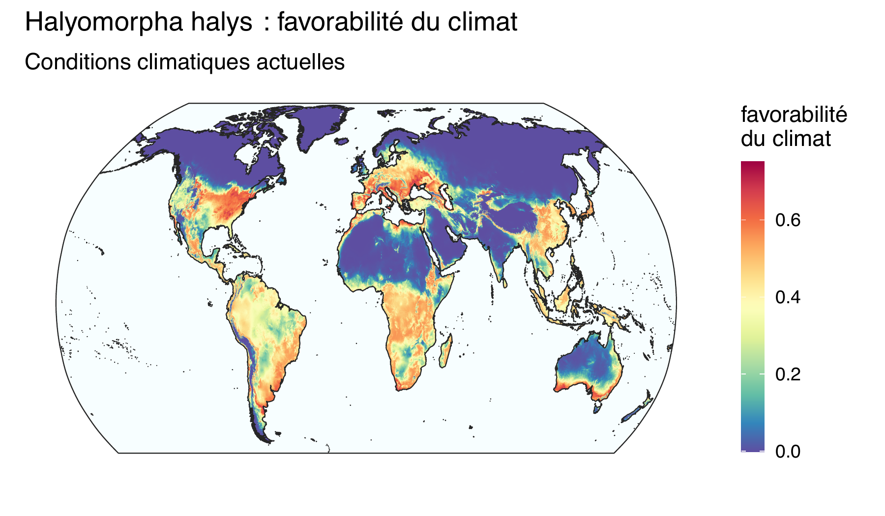

Je suis directeur de recherche à Inrae (centre de Montpellier). Mes domaines de recherche couvrent l’entomologie forestière et agricole avec un focus particulier sur la dynamique spatiale des ravageurs dans les paysages et à l’échelle continentale. Mes recherches portent sur l’écologie spatiale des insectes ravageurs et visent à mieux comprendre les déterminismes environnementaux de la dynamique des populations dans l’espace. Je travaille principalement à deux échelles : l’échelle des paysages et l’échelle continentale qui correspond aux aires de distribution des espèces. Les processus écologiques diffèrent souvent de même que les échelles de temps auxquelles ils agissent et de ce fait, ces deux approches sont complémentaires.
Un effort de recherche important est aujourd’hui consacré à l’identification des facteurs environnementaux contrôlant les aires de distribution des espèces de ravageurs des cultures ou des forêts. Ce travail concerne les ravageurs natifs ainsi que les espèces envahissantes. La modélisation des niches écologiques constitue un outil utile pour estimer l’aire de distribution potentielle des espèces d’intérêt et simuler son évolution sous différents scénarios de changement climatique. L’aire de distribution potentielle d’une espèce constitue une information importante et utile pour réaliser des analyses de risque phytosanitaire.

Bien que la prévention de l’introduction et de la propagation d’organismes nuisibles exotiques dans le contexte d’un commerce international sans cesse croissant semble être un objectif inaccessible, des améliorations substantielles de notre gestion des espèces envahissantes pourraient être obtenues en améliorant la prévention, la surveillance et la sensibilisation du public. Le moyen le plus efficace de contenir les invasions biologiques est d’empêcher l’introduction d’espèces exotiques mais ceci est extrêmement difficile !
L’anticipation est un élément clé d’une bonne préparation aux crises sanitaires causées par des espèces envahissantes. Dans ce cadre, l’identification des envahisseurs potentiels avant leur arrivée et la délimitation des zones à risque revêt une importance capitale. Se préparer aux crises sanitaires en santé végétale implique de disposer d’une capacité de réponse rapide et coordonnée et d’être à même de pouvoir mobiliser un panel d’experts ayant une bonne connaissance du risque associé aux ravageurs.
Les modèles de distribution des espèces (SDM) sont des outils bien connus pour modéliser les niches climatiques des espèces et évaluer les zones offrant des conditions climatiques favorables. Cette information est utile pour identifier les zones où une espèce envahissante pourrait se maintenir en cas d’introduction ce qui est un élément intéressant dans le cadre de la préparation des autorités sanitaires.
Il devient possible d’orienter l’épidémiosurveillance, informer le public et les filières professionnelles. On peut également construire des outils de science citoyenne afin de collecter très vite et à une large échelle des données écologiques qui sont toujours précieuses lors d’une invasion biologique (Chartois et al 2021) et permettent d’alimenter certains modèles.Le changement climatique se traduit par des modifications profondes des conditions environnementales auxquelles les espèces sont confrontées. Pour certaines espèces, le réchauffement constaté en Europe permet une expansion vers de plus hautes latitudes. C’est le cas de la processionnaire du pin (Roques 2015) ou de la processionnaire du chêne (Godefroid et al 2020). Il serait par contre faux de croire que les changements globaux sont systématiquement favorables aux invasions biologiques. Nous avons récemment montré que les conditions climatiques futures seront globalement défavorables à la punaise diabolique excepté en Europe où cette espèce trouvera des conditions de plus en plus favorables notamment dans la partie nord du continent (Streito et al 2021).
Chartois, M., Streito, J.-C., Pierre, É., Armand, J.-M., Gaudin, J., Rossi, J.-P., 2021. A crowdsourcing approach to track the expansion of the brown marmorated stinkbug Halyomorpha halys (Stål, 1855) in France. Biodiversity Data Journal 9, e66335.
Godefroid, M., Meurisse, N., Groenen, F., Kerdelhué, C., Rossi, J.-P., 2020. Current and future distribution of the invasive oak processionary moth. Biological Invasions 22, 523–534.
Roques, A. (Ed.), 2015. Processionary Moths and Climate Change: An Update. Springer, Dordrecht.
Streito, J.-C., Chartois, M., Pierre, É., Dusoulier, F., Armand, J.-M., Gaudin, J., Rossi, J.-P., 2021. Citizen science and niche modeling to track and forecast the expansion of the brown marmorated stinkbug Halyomorpha halys (Stål, 1855). Scientific Reports 11, 11421.
L’échelle du paysage est l’échelle spatiale privilégiée pour comprendre la dynamique des populations d’insectes et les relations avec l’hétérogénéité environnementale (i.e. la structure et la composition du paysage). De nombreuses options de gestion et d’aménagement du territoire sont envisagées à cette échelle qui est également pertinente pour aborder les questions de maintien de la biodiversité. C’est également l’échelle à laquelle on réalise les inventaires destinés à suivre l’évolution de la santé des forêts et des cultures et identifier d’éventuels foyers de prolifération d’organismes ravageurs.
Pour comprendre la dynamique des bioagresseurs forestiers, il est nécessaire de dépasser le cadre strict des forêts et intégrer les autres compartiments du paysage (parcelles agricoles, zones urbaines…). Aujourd’hui, nous essayons de comprendre la dynamique spatiale de certaines espèces telles que la processionnaire du pin Thaumetopoea pityocampa (lépidoptères Notodontidae) en considérant toutes les composantes du paysage et notamment les milieux urbains et péri-urbains. Nous avons récemment mis en évidence le rôle majeur joué les arbres hors forêt (AHF) dans la dynamique spatiale de l’insecte et sa remontée vers le nord de la France à la faveur du changement climatique. Ainsi, certains AHF permettent la dispersion de la processionnaire à travers les grandes régions agricoles (par exemple la Beauce) dans lesquelles le couvert forestier est très limité ce qui facilite son expansion géographique (Rossi et al 2016a).
Tout comme les zones rurales, les milieux urbains et péri-urbains abritent des arbres hors forêts que l’on appelle arbres urbains. Ces arbres jouent un rôle important dans la qualité de vie en ville mais peuvent également poser des problèmes (on parle de “disservices écosystémiques”) en produisant des pollens allergènes ou en abritant des espèces représentant un danger pour la santé publique. C’est le cas des processionnaires du pin et du chêne dont les chenilles urticantes peuvent causer des légions très sévères aux animaux domestiques et des allergies chez l’homme. Pour de telles espèces, une bonne connaissance de la distribution des arbres en ville permet le suivi de l’infestation et l’élaboration de carte de risque à l’échelle des agglomérations. Ces cartes servent à améliorer l’information du public et mieux gérer la lutte contre l’insecte (Rossi et al 2016b).
Rossi, Jean-Pierre, Garcia, J., Roques, A., Rousselet, J., 2016a. Trees outside forests in agricultural landscapes: spatial distribution and impact on habitat connectivity for forest organisms. Landscape Ecology 31, 243–254.
Rossi, J.-P., Imbault, V., Lamant, T., Rousselet, J., 2016b. A citywide survey of the pine processionary moth Thaumetopoea pityocampa spatial distribution in Orléans (France). Urban Forestry & Urban Greening 20, 71–80.
16 May, 2023
© 2023 Jean-Pierre Rossi